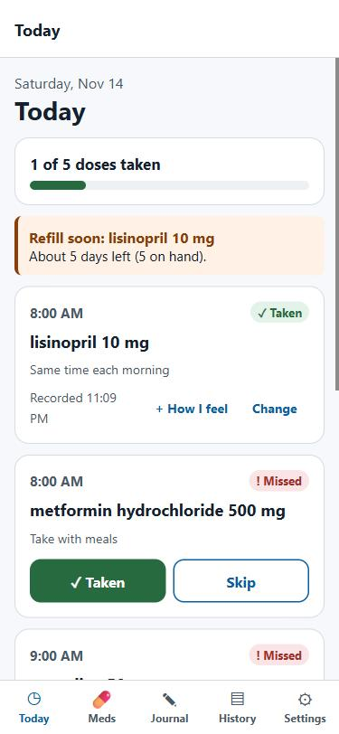
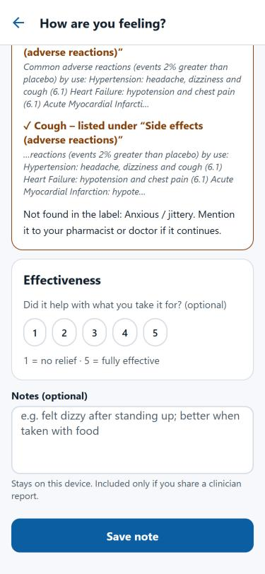
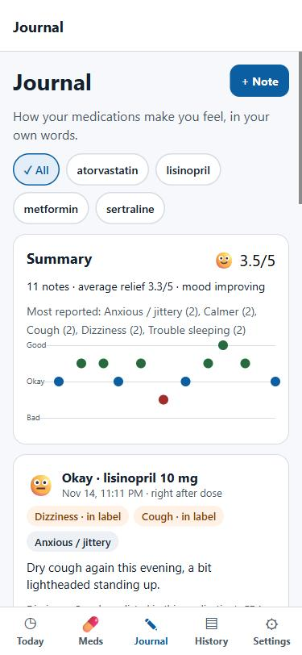
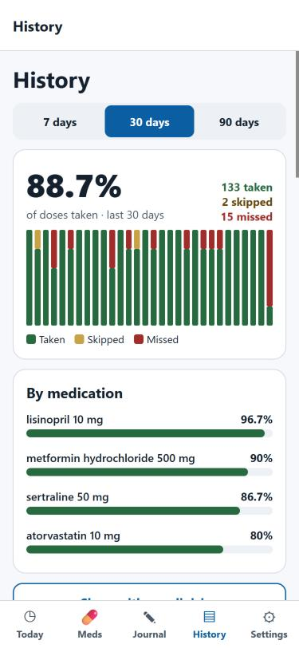

COMP 4310 – Web Health Informatics
Team Name: PillPal
Team Members:
{{TEAM}}Department of Computer Science, Lakehead University
Repository: {{REPO_URL}}
Date: November 2026
PillPal is a working cross-platform mobile application (React Native with Expo SDK 58 and TypeScript) that runs entirely on the phone and talks directly to the public RxNorm and openFDA services. It implements the full Tier 1 workflow from P3 and most of Tier 2: add medication → create schedule → receive reminder → record dose → review history → view medication information. On top of that workflow it adds our main contribution, an effects journal. Users record how a medication makes them feel after taking it, and each reported effect is automatically compared against that medication's official FDA label. We deliberately removed the optional AI explanation component (FR8) so the team can focus on a reliable, well-tested core workflow (see A4).




Figure 1. Running prototype with synthetic demo data (more screenshots in docs/screenshots/).
| Req. | Requirement (P3) | Status | Evidence |
|---|---|---|---|
| FR1 | Add, edit, remove medications | Complete | RxNorm search + manual entry; edit/stop/delete; validation. Repository tests (add/edit/delete cascade, validation). |
| FR2 | Configurable reminder times | Complete | Multiple times, days of week, date range. Tests: day filter, midnight crossing, DST, invalid input. |
| FR3 | Notification when a dose is due | Implemented, not yet device-tested | Local notifications with Taken/Skip actions, cold-start handling, rolling window (test: 224 doses → 60 pending). E2 reliability run pending. |
| FR4 | Record Taken / Missed / Skipped | Complete | From app or notification; auto-missed after grace; corrections. Tests: grace boundary, auto-missed written once, supply restored on correction. |
| FR5 | Medication history | Complete | History tab grouped by day with source (app / reminder / auto). Screenshot (d). |
| FR6 | Adherence information | Complete | 7/30/90-day %, daily chart, per medication. Tests against hand-calculated values; reproducible 30-day seeded set. |
| FR7 | Trusted medication information | Complete | openFDA label by RxCUI, offline cache, DailyMed link. Parser tests on saved real RxNav/openFDA responses. |
| FR8 | Optional plain-language explanation (AI) | Removed from scope | Dropped to keep the prototype focused on the core workflow (A4). The label is instead shown verbatim, organized into plainly titled sections. |
| New | Notes after a dose: how it makes the user feel | Complete | Journal entry, edit/delete, summaries, label matching. Tests verify matches on the real lisinopril label (cough, dizziness). |
| NFR1/5 | Usability / accessibility | Partial | 48 px touch targets, labelled controls, 16/16 colour pairs ≥ 4.5:1 (WCAG AA). Heuristic evaluation and screen-reader pass pending. |
| NFR2 | Reminders work closed/offline | Designed, not yet measured | Local scheduling, no network needed; re-registered on app open. |
| NFR3 | Secure storage, minimal disclosure | Partial | SQLCipher + Keystore/Keychain key in development builds (not in Expo Go). Only drug names / public IDs leave the device. |
| NFR4 | Screens respond within ~2 s | Met in test | E3: 90-day history over 3,780 dose records loads in median 24 ms, max 63 ms (Node SQLite; on-device timing pending). |
| Roles | Caregiver / professional (Sec. 3) | Partial | Local multi-profile + role-based home. Firebase accounts, sync and invite links not started. |
P2 concluded that reminders alone are not novel and that the gap is simple medication management + trustworthy medication information + understandable presentation. The prototype connects the three. Medications are identified with RxNorm, so the app can retrieve the correct official label. The label is presented clearly: the boxed warning comes first, each section has a plain title such as "How to take it" or "Side effects", long sections are collapsed, and the source and label version are always visible. The effects journal turns that label into something personal: when a user reports a dry cough after lisinopril, PillPal shows that cough is listed in the lisinopril label and quotes the excerpt. This makes the information relevant to the user's own experience without diagnosing anything. The clinician summary carries the same information to appointments.
Public repository: {{REPO_URL}}
The repository contains the complete source of the mobile app (app/), a README with project description, features, setup and run instructions, dependencies and configuration, and a privacy section listing exactly what is sent to each external service. No server or API keys are needed: the public RxNorm and openFDA APIs are called directly. Demo data is synthetic and loaded from inside the app (Settings → Load synthetic demo data). It uses real public RxCUIs so that drug information works live. Test fixtures are real public RxNav/openFDA responses. The repository also includes the test suite, a WCAG contrast check, saved test output (docs/evidence/), screenshots and the demo script. No credentials or patient information are committed.
| Item | Technology / location |
|---|---|
| Mobile app | React Native 0.88, Expo SDK 58, Expo Router, TypeScript; expo-sqlite (SQLCipher), expo-notifications, expo-secure-store |
| Pure logic (unit tested) | app/src/core/: schedule, adherence, refill, effects (label matching), drugdata (parsers), report |
| Data layer | app/src/data/: schema + migrations, repository (all SQL), seed data. The same SQL is tested through Node's node:sqlite |
| External data | RxNorm/RxNav (NLM), openFDA drug label API, DailyMed links |
Against the P3 plan, all Tier 1 tasks are implemented. Of Tier 2, dose recording from the notification, auto-missed, history and adherence are complete. Of Tier 3, the openFDA label view, refill reminders and role-based home screens are implemented ahead of schedule. Firebase sign-in, sync and caregiver invite links have not been started. We applied the P3 decision gate and moved them to the final-stretch plan below. The optional AI explainer was removed from scope.
| Check (P3 eval.) | What was tested | Result |
|---|---|---|
| E1 Functional (unit/integration) | 51 Jest tests: scheduling (midnight crossing, DST, day filters, invalid input), grace period, auto-missed, adherence against hand-calculated values, refills, journal validation and summaries, label matching, RxNorm/openFDA parsing on real responses, repository SQL including cascades and schedule edits | 51 / 51 pass |
| E3 Performance | 3 synthetic profiles, 15 medications, 90 days (3,780 dose records); medication list + 90-day adherence loaded 10× | median 24 ms, max 63 ms (target < 2 s) |
| E5 Lookup (preliminary) | Live RxNorm and openFDA lookups for 10 common medications (metformin, lisinopril, atorvastatin, sertraline, amlodipine, ibuprofen, levothyroxine, omeprazole, amoxicillin, acetaminophen) and for misspelled input | 10/10 product RxCUIs returned a complete FDA label (after the fix below); "lipitr" resolved to Lipitor products |
| E6c Accessibility (partial) | WCAG 2.1 contrast of all text/background pairs; labelled controls; 48 px targets | 16 / 16 pairs ≥ 4.5:1 |
| End-to-end walkthrough | Full workflow in the running app (web preview): search → add → mark taken → journal + label check → history → drug info → explanation → clinician summary | Working. Found and fixed 4 defects (below) |
The tests and walkthrough found real defects, which were fixed and covered by regression tests. (1) A medication added in the evening immediately showed that morning's doses as Missed; doses whose grace period ended before the medication existed are now ignored. (2) Two dose records with the same timestamp could resolve in the wrong order; ties now keep insertion order. (3) RxNorm approximate matches lost the drug name when the same concept appeared in two vocabularies. (4) For atorvastatin, openFDA's first match was a repackager label with no clinical sections, so PillPal now requests up to five labels and uses the most complete one. The suites also confirmed E1 boundary cases from P3: a 23:30 dose is still "due" at 00:15, and a dose stays at 08:00 local time across the November DST change.
Overall progress: the core objectives from P1 (accurate entry, reminders and adherence tracking, trustworthy information, privacy-preserving storage) are implemented. Drug-interaction alerts and AI-generated explanations are out of scope. The remaining risk is in on-device validation (E2, E6) and the cloud features.
npx expo run:android).| Week | Tasks | Exit criterion |
|---|---|---|
| Nov 16–22 (P4 demo) | Development build with SQLCipher on Android; E4 database-file check; start E2 on one Android phone; E5 lookup test on the full 30-drug list (incl. Canadian brands) | Demo delivered; DB unreadable without key; E5 table produced |
| Nov 23–29 (feature freeze 29th) | E2 full run (open / background / swiped / airplane / reboot); heuristic evaluation (each member reviews screens they did not build); TalkBack/VoiceOver + largest-font pass; fix severity 3–4 issues; Firebase sign-in + Firestore sync only if all of the above pass | ≥ 95% reminders within 60 s; no unlabeled controls |
| Nov 30–Dec 4 | E3 timing on a mid-range phone; final traceability matrix; report, tagged release and final demo | All Tier 1–2 tests pass; final submission |
The most important remaining challenge is evidence on real devices. We will address it first, in the week of the demo, because reminders that do not fire would undermine the whole workflow. The time freed by removing the AI component goes to device testing (E2), accessibility and usability work (E6), and, only if those pass, the Firebase features.
[1] U.S. National Library of Medicine, "RxNorm API / RxNav," accessed Nov. 2026.
[2] U.S. Food and Drug Administration, "openFDA Drug Labeling API," accessed Nov. 2026.
[3] U.S. National Library of Medicine, "DailyMed," accessed Nov. 2026.
[4] Expo, "SQLite (expo-sqlite)" and "Notifications (expo-notifications)," Expo SDK 58 documentation, accessed Nov. 2026.
[5] W3C, "Understanding SC 1.4.3: Contrast (Minimum)," WCAG 2.1, accessed Nov. 2026.
[6] J. Nielsen, "10 Usability Heuristics for User Interface Design," Nielsen Norman Group, 1994.